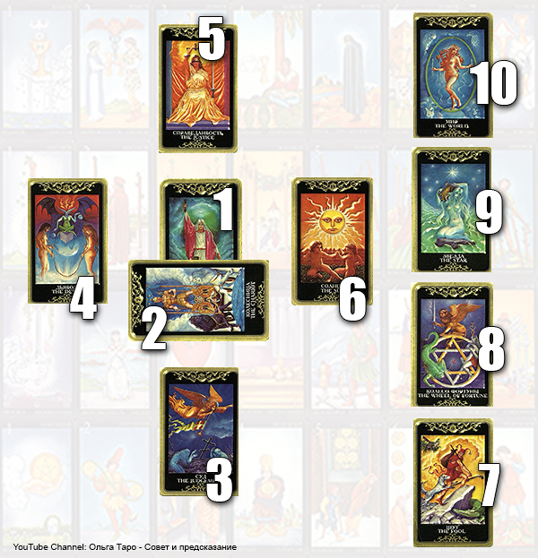
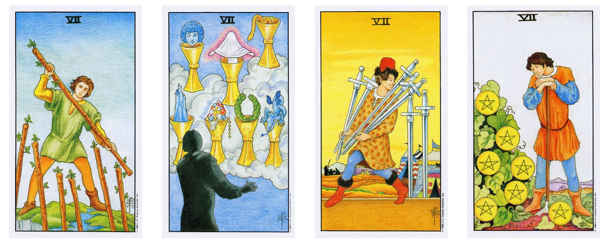
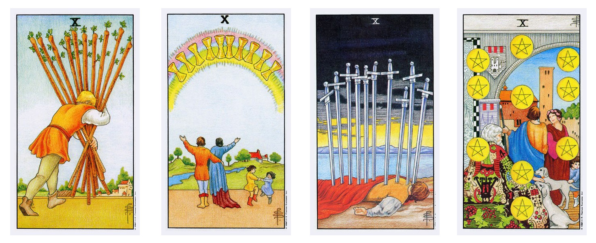

СА и МА тесно взаимодействуют между собой и взаимно влияют друг на друга.
СА – общая тенденция события, ситуации, личности.
МА – конкретная характеристика, детали, расшифровка.
C помощью мечей можно дать оценку действий участников в той или иной ситуации, оценку развития.
В личном раскладе мечи – как человек будет действовать, его темперамент. Посохи показывают качества человека связанные с материальной сферой.
Жезлы помогут оценить пользу или вред этих действий для нас, указать на результат действий.
Пентакли дадут вспомогательную информацию о денежно-информационном фоне этих действий.
В личном расклады пентакли отражают интеллектуальные способности, коммуникабельность, сообразительность.
С помощью кубков – оцениваем настроение, эмоциональный фон, атмосферу ситуации.
В личном раскладе кубки оценивают душевные качества человека, шкалу внутренних ценностей.
- 1. То, что покрывает вопрос
- 2. То, что пересекает вопрос к добру или к худу
- 3. То, что составляет основу ситуации
- 4. То, что позади вас или уходит
- 5. То, что венчает вас и может сбыться
- 6. То, что впереди
- 7. То, что представляет ваши отрицательные эмоции
- 8. То, что представляет чувства окружающих вас людей
- 9. То, что представляет ваши положительные эмоции
- 10. Результат
Прежде чем анализировать Кельтский расклад, посмотрите:
1. Уравновешивают ли друг друга все масти в раскладе.
2. Доминирует ли какая-либо масть.
3. Нет ли в нем необычного количества карт-картинок.
4. Какая из карт-картинок представляет клиента.
5. Проверьте третью карту - она представляет основание ситуации.
6. Обратите внимание на карты 5,9,7 и 10. Положительные они или отрицательные.
7. Обратите внимание на взаимоотношения карты 5 к картам 6,7,8,9 и 10. Положительное оно или отрицательное.
8. Есть ли между картами 5 и 9 отношения старший\младший и каковы они.
9. Сколько Сочетаний выпало и какие они.
10. Есть ли в раскладе четыре и более карт Старших арканов? Если это так, мы имеем дело с "кармическим перекрёстком", и требуется глубинное чтение при помощи отдельной колоды из Старших Арканов*. (Мы будем рассматривать специально расклад кармического перекрёстка).
Первая значимая карта - Пятая карта «То, что венчает и может сбыться».
Эта карта не является картой предсказания.
Она представляет эзотерическую энергию, которая окружает клиента на момент предсказания.
Это результат мыслей, действий по поводу существующей ситуации.
У пятой карты нет фиксированного аспекта. Она может быть пробуждена:
Собственным отношением клиента и его подходом к делу,
Отношением и подходом к этому делу прочих людей, связанных с ситуацией.
Если пятая карта позитивна, но карты в позициях 6,7,8 и 10 негативны, это означает, что у клиента неправильное отношение или подход к делу, касающееся лиц, связанных с данным вопросом.
Становится важно всмотреться в ситуацию и понять её подлинное значение. Даже если отношение клиента к данному вопросу положительно, это не означает, что оно правильно.
Положительная энергия пятой карты может повести по неправильному пути.
Если пятая карта положительна и карты 6,7,8 и 10 тоже положительны, это покажет, что отношение клиента и подход к ситуации правилен и благотворен для клиента.
Если пятая карта отрицательна по значению, а карты 6,7,8 и 10 положительны, это значит, что клиент находится в дисгармонии с тем, что его окружает. Надо посмотреть либо на своё положение с другой точки зрения, либо пересмотреть своё отношение к людям, которые связаны с этой проблемой. Карты серьёзно предупреждают о том, что клиенту надо более позитивно относиться к ситуации.
Если пятая карта негативна и карты 6,7,8 и 10 тоже негативны, это означает, что энергия пятой карты уже разбужена.
Следующей важной картой в Кельтском раскладе является седьмая карта: «То, что представляет ваши собственные отрицательные чувства».
Когда карта располагается в седьмой позиции, а клиент мечтает, чтобы это событие произошло, негативный аспект карты может вас смутить. Например, если в седьмой позиции располагается девятка кубков, поневоле удивляешься, как такая благотворная карта может представлять отрицательные понятия.
Анализируя ситуацию, нужно разобраться с теми препятствиями, которые непосредственно мешают клиенту. Очевидно, что они создают барьер между ним и тем, чего он хочет.
Если в седьмой позиции перед вами оказывается положительная карта в отрицательном положении, это означает, что ваш клиент не до конца убеждён в том, что счастливое событие произойдёт.
Даже если он очень сильно ощущает потребность в этом событии, глубоко внутри он чувствует противостоящую энергию, которая может заблокировать желательное ему событие.
Ирония судьбы в том, что отрицательные вибрации вполне могли быть разбужены его собственными страхами.
Мысли - живые существа на своём собственном уровне, а их сила - положительная, отрицательная или нейтральная - играет серьёзную роль в нашей повседневной жизни.
То, как мы используем эту силу, сказывается на том, какого уровня радости и удовлетворения жизнью мы можем достичь.
Поэтому, когда в седьмой позиции карта с положительным значением, наша задача - посоветовать клиенту изменить своё отношение к возможности желанного события.
Нужно объяснить ему, что осуществлению желания мешает только собственный страх клиента.
Особенную важность для его жизни будет подчёркивать расположение в этой позиции положительного старшего аркана.
Девятая карта: «То, что представляет ваши собственные положительные чувства»
Это третья важная карта в Кельтском раскладе.
Она помогает и дальше изучить ситуацию, усиливая или аннулируя силу карты 5.
Как только мы исследовали Пятую карту и её связь с картами 6,7,8 и 10, следующий шаг - внимательно посмотреть на карту 9.
Если карты 5 и 9 обе положительные, это подчёркивает положительное отношение клиента к вопросу.
Если карта 5 отрицательная, а карта 9 положительная, это говорит о том, что клиент в настоящее время испытывает отрицательные чувства, которые вскоре развеются. Положительное влияние девятой карты активизируется и возьмёт на себя управление ситуацией в пользу клиента.
Если карта 5 положительная, а карта 9 отрицательная, это означает, что отношение клиента к человеку или ситуации вскоре переменится. Что-то совершенно изменит точку зрения клиента.
Если карты 5 и 9 обе отрицательные, это означает, что негативные чувства клиента очень сильны.
Необходимо также рассмотреть четыре возможные в этом положении комбинации Старших и Младших карт:
Карта 5 = Старшая \ карта 9 = Младшая
Клиент направит усилия в сторону 5 карты.
Карта 5 = Младшая \ карта 9 = Старшая
Клиент будет склонен к силе карты 9.
Карта 5 = Старшая \ карта 9 = Старшая
Клиент испытывает в этой ситуации кармическое влияние. Когда обе позиции заняты Старшими картами, нужно определить положительную или отрицательную природу ситуации.
Карта 5 = Младшая \ карта 9 = Младшая
Если обе карты младшие, клиент не испытывает сильного стресса в этой ситуации. В таком случае о результате событий можно судить по карте 10.
Это исход и общая сумма вибраций остальных карт в раскладе.
Часто оказывается, что десятая карта является чем-то неожиданным, никак не связанным с остальным раскладом. Это происходит в тех случаях, когда результат одновременно является исходной точкой нового цикла в жизни клиента.

Когда в раскладе появляется семёрка любой масти, это показатель перемен.
Природа этой перемены определяется мастью СЕМЁРКИ.
Количество семёрок, появившихся в раскладе, указывает на интенсивность перемены или на то, что перед нами серия перемен.
Перемены не обязательно означают потрясения. Каждый день мы переживаем какие-то перемены в нашей жизни, и часто они не что иное, как результат наших предыдущих усилий, которые наконец-то принесли свои плоды.

Десятки представляют собой переход с одного уровня на другой.
Они вызывают ИЗМЕНЕНИЯ УРОВНЯ в нашей жизни.
Нужно учитывать, что десятка сама по себе не является картой перемен - это карта перехода, который поможет осуществится Изменению Уровня.
В судьбе клиента не может быть событий высшего уровня, чем те, что представлены десяткой.
Если за десяткой следует карта Больших Арканов, мы столкнулись с кармической природой грядущих перемен. В этом случае паж расскажет нам, в какой сфере жизни или в какой форме произойдёт данная перемена.
ПОСЛЕ ДЕСЯТКИ ПАЖ ПРИНОСИТ СЕМЯ. ПРИРОДА СЕМЕНИ ПОДСКАЖЕТ НАМ, КАКОГО РОДА ИЗМЕНЕНИЕ УРОВНЯ НАМ ПРЕДСТОИТ.
Семя, которое приносит паж, является началом нового цикла.
Допустим, на другом уровне (в раскладе выпадает и паж и туз) нам предлагается туз.
На этот раз он является проявлением десятки, независимо от масти, и означает, что в дело вмешивается могучая сила. (В этом случае масть туза уже скажет нам, в какой области нам судьба предоставит шанс).
У нас появляется возможность переосмыслить всё происходящее и избежать грубых кармических ошибок, если мы читаем расклад в свете полученной информации, серьёзно относясь к переменам в своей жизни и более глубоко рассматривая их. Ведь никогда не поздно изменить ошибочно принятое решение, исправить его.
Десятка - события, опыт и переживания, предшествующие изменению уровня. ПАЖ раскрывает природу предстоящего события, переживания и опыта, которые станут доступны клиенту в результате изменения уровня.
1. То, что покрывает вас
Если первой картой является 10, наш клиент ощущает её воздействие на себе в настоящий момент.
2. ТО, что встречается к добру или к худу
Клиент может находиться под влиянием двух совершенно различных вибраций, которые либо могут дополнять друг друга, либо противоречить друг другу. Рассмотрите карту 1, чтобы определить положительное или отрицательное влияние оказывает десятка.
3. То, что составляет основу ситуации
Десятка в этом положении уже оказала своё влияние. Событие, на которое она указывает, уже произошло. Карты 1и 4 дадут нам представление о том, в каком положении оказался наш клиент и положительным или отрицательным было само событие и как его воспринял клиент.
4. То, что позади и уходит
Десятка в этом положении укажет на то, что именно произошло, на природу события. Тщательно изучите эту карту, и она поможет дать полноценное прочтение расклада.
5. То, что венчает и может сбыться
Десятка в этом положении указывает на то, что событие ещё не успело материализоваться. Необходимо рассмотреть, что может материализоваться в жизни.
6. То, что впереди
Карта под номером 10 сильно связана с картой 6. Рассмотрев связь между этими картами, мы сможем увидеть, сформировал ли наш клиент для себя представление о своём будущем и его планы.
7. То, что представляет ваши отрицательные чувства
Она раскрывает страхи и опасения. Если в этой позиции хорошая карта, клиент опасается что этого может не случиться. Есть и другая сторона: он может быть слишком уверен в результате, а итог обманет его ожидания. Десятка в этом положении покажет, как себя чувствует клиент, чего он хочет, однако вовсе не обязательно его мечта осуществится.
8. То, что представляет чувства окружающих
Успех клиента может очень сильно зависеть от системы поддержки, которую оказывают ему окружающие. Десятка в этой позиции скажет о том, что он в этой поддержке не нуждается.
9, То, что представляет ваши положительные чувства
Десятка в этой позиции означает, что вопрос жизненно важен для клиента.
10. Результат расклада
Десятка в этой позиции ясно говорит о том, что клиенту нужно ждать перехода с одного уровня на другой.
Если в раскладе за десяткой следует паж, клиенту предстоят несколько изменений различного рода на одном временном отрезке.
Если в раскладе появляется две или более десяток, это означает, что человек пережил (или переживает - в зависимости от положения 10) несколько изменений в жизни. Именно этим может объясняться смятение, которое он испытывает.
Если в раскладе две или более десятки, но нет пажей - вы читаете указания на время ОСУЩЕСТВЛЕНИЯ ПРЕХОДЯЩЕГО ИЗМЕНЕНИЯ ВРЕМЕНИ.
Человек, выигравший крупную сумму в лотерее испытывает на себе действие десятки, и страдающий от разрыва отношений тоже. Человек может испытывать два уровня изменений одновременно: вступать в права наследства и находиться в состоянии развода.
Основой подход в конкретизации изменение уровня – соединение десятки и пажа.
ОДНА ДЕСЯТКА В РАСКЛАДЕ:
смотрим на положение десятки в раскладе, когда произошло изменение уровня
есть ли паж после десятки, если есть – он несет новое семя
если нет – клиент еще не полностью испытал на себе силу изменения уровня
Первый ПАЖ, который обнаружится в раскладе, конкретизирует первую ДЕСЯТКУ.
Пажи не обязательно должны быть одной масти, что и десятки.
Если в раскладе оказывается один или несколько Пажей без десяток, это означает, что клиент уже испытал на себе силу Изменения Уровня, а сейчас находится в процессе восприятия семени, которые приносят ему Пажи от новых усилий.
БОЛЕЕ ОДНОЙ ДЕСЯТКИ:
поможет расположение десяток в к/к
испытывает несколько изменений уровня
Преобладание в раскладе карт Большого Аркана может указывать на то, что человек находится в стадии трансформации и сам до конца не осознает или понимает, происходящее с ним, важность и судьбоносность своих поступков.
Когда в раскладе в среднем Четыре Больших Аркана, это нормально, человек в потоке, его внутренние и внешние изменения происходят уравновешенно. Если их количество превышает это число, то следует задуматься о том, что возможно требуется больше дел чем раздумий.
Если карт Больших Арканов более восьми, то над человеком довлеют роковые обстоятельства или фатум.
Преобладание Малых Арканов указывает на то, что подоплека дела характеризуется событиями внешнего мира и повседневной жизни.
Здесь следуют следующие категории:
Карта 1: Указывает на то, что клиент уже подошел в своей жизни к Кармическому перекрестку.
Карта 2: Кармическая энергия уже пробудилась и начала свое действие.
Карта 3: Ключевая карта – показывает опыт прошлой жизни. Причина и цель нынешнего Перекрестка.
Карта 4: Что начнет или уже начало освобождение от прошлой кармы.
Карта 5: Позиция кармической проработки. (Положение не фиксировано).
Карта 6: Кармический урок. Что может встретиться в будущем.
Карта 7: Энергия сопротивления или неприятия клиента.
Карта 8: Сила реальной жизни.
Карта 9: Положительная позиция или направление.
Карта 10: Результат расклада.
В Кельтском Кресте у них традиционно двоякое прорицательное значение.
На первом, внешнем уровне это или некая персона в окружении вопрошающего или событие (Пажи). На втором, внутреннем, некие образы или черты характера.
Когда Фигурная карта выпадает в 10 позиции следует вытянуть еще одну или несколько карт для подробного разбора ее значения.
●●●●●●●
●●●●●●●
●●●●●●●Преобладание
●●●●●●●Обилие
Сочетания-это комбинация двух специфических карт в раскладе.
Когда в раскладе вместе с любой ДВОЙКОЙ, ТРОЙКОЙ, СЕМЕРКОЙ или ДЕВЯТКОЙ появляются в любом порядке любые карты СТАРШИХ АРКАНОВ, это означает, что перед вами Сочетание карт.
Первостепенную важность имеет ПОРЯДОК КАРТ, поэтому внимательно следите, как карты следуют друг за другом.
●●●●●●●Если карта младших арканов предшествует карте старшего аркана, это определяет каким образом клиент будет переживать данное сочетание.
●●●●●●●Если карта старших арканов предшествует младшим арканам, переживания клиента тоже отразятся, но его подход к ситуации будет иным.
Младшие сочетания появляются в том случае, когда любые ДВОЙКИ, ТРОЙКИ, СЕМЕРКИ, ДЕВЯТКИ предшествуют любой карте СА.
Младшее сочетание сигнализирует о начале какого-то цикла.
Младшая карта, расскажет о том, что придется испытать до того, как начнет оказывать свое действие карта СА.
Рассмотрите эмоциональное состояние клиента и то, какой путь он выберет для взаимодействия с энергиями МА.
Рассмотрев отрицательную или положительную позицию, вы сможете предвидеть то, как он поймет суть и смысл своего старого цикла и возможную реакцию на новый цикл событий.
В раскладе может быть несколько сочетаний. В таком случае надо рассматривать отдельно.
ДВОЙКА перед С.А обозначает отрезок времени, который должен пройти прежде, чем клиент ощутит на себе вибрации С.А. За это время можно пройти полосу небольших кризисов, перемен. Как правило, ДВОЙКА знаменует собой трудности, требующие преодоления. Она требует выдержки и заставляет пересмотреть свои отношения с людьми. ДВОЙКА несет сильную энергию и заставляет искать реалистичный подход к ситуациям, перед которыми стоит клиент. Поскольку здесь замешано представление клиента о самом себе, он может почувствовать эту ситуацию как личный вызов.
ДВОЙКА жезлов - быть готовым к переговорам, партнерству, новые возможности, личный вклад в дело.
кубков-полная гармония и взаимопонимание, новые силы и ощущения
мечи- тупик, необходим новый подход
пентаклей-необходимость поддерживать гармонию, терпение и настойчивость
В своем положительном аспекте энергия ДВОЙКИ может отвечать за активацию действий клиента, но прежде чем, это произойдет должно пройти время.
Временная последовательность ДВОЙКИ
ДВОЙКА жезлов-два дня кубков-две недели мечи-четыре недели пентакли-два месяца
Чтобы исследовать сочетания с ТРОЙКОЙ нужно настроиться на энергию цикла ТРОЙКИ. Это форма самовыражения, будь она положительной или отрицательной. Именно с этого момента придется принимать новые решения на основании прошлых действий. ТРОЙКА ведет себя как напоминание о том, что совершил клиент, а что не совершил. Клиенту придется каким-то образом приспосабливаться к существующем условиям и производить для этого определенные изменения в себе самом, поскольку эта энергия разбужена его собственными прошлыми мыслями, поступками.
ТРОЙКА жезлов-три дня
Время уверенности, а не страха. Это сочетание призывает стабилизироваться и крепко держаться за то, что есть. Не рекомендуется менять планы или представления и приблизительно через три дня он получит дальнейшее руководство со стороны карт С.А. Если вы чувствуете, что ваш клиент колеблется, посоветуйте ему, отложить именно то, чего он так ждет.
ТРОЙКА кубков-три недели
В цикл судьбы вступает новый вид энергии, и в течении трех недель закончатся нынешние усилия и произойдет перемена.
ТРОЙКА мечи-шесть недель
При этом сочетании переживается ощущение потери и отсутствия будущего. Хотя клиент и не чувствует, но цикл меняется и худшее позади. Здесь огромную роль может играть эмоции, которые мешают здравому рассуждению.
ТРОЙКА пентаклей-три месяца
В жизни происходит много событий, приносящие успешные плоды, важно контролировать ситуацию и следовать здравому смыслу.
Каждая из семерок заключена и действует только в пределах семи дней. Этот период может быть продлен или укорочен только положительным или отрицательным отношением.
СЕМЕРКА жезлов-следующие семь дней могут создать атмосферу напряжения или давления. Но это не должно служить основанием для плохого отношения к обстоятельствам. Надо приспособиться и принять ситуацию и рассматривать это время как период, когда СЕМЕРКИ приводят в дейсвие ожидаемые перемены. Клиент должен использовать эти дни для того, чтобы подумать об энергии С.А. Это поможет подготовиться и подскажет ему, что ожидать.
СЕМЕРКА кубков- клиенту надо посоветовать охватить мыслями н етолько теперешную ситуацию, но и устранить все барьеры, особено эмоционального плана. Он должен внимательно сосредоточиться на своей цели-это позволит расширить горизонты его представления и возможности.
СЕМЕРКА мечи-при этом клиент сразу осознает своей проблемы. Ему надо избегать негатива и искать позитивный подход. Нельзя принимать решения под влиянием эм. порывов, следует переоценить свое положение. Следующая карта С.А имеет важное значение в поиске новой цели.
СЕМЕРКА пентаклей-использовать это время для планирования новых ситуаций, клиент совершает правильные действия, нужные усилия в нужном направлении.
Они вызывают новое равновесие событий. По этой причине клиент может испытывать тревогу, неувереность, незащищенность. ДЕВЯТКА действует как стимул, формируя реакцию на ситуацию и условия, уже созданные в процессе предыдущего цикла. ДЕВЯТКА пытается закончить и завершить этот цикл. Главная ее сила сводит воедино весь прошлый опыт. Она заставляет размышлять, мысленно возвращаться к началу вещей. Клиент может как поздравлять себя или осуждать. ДЕВЯТКА освободит энергию новой частоты и подготовит к наступающему циклу. ДЕВЯТКА не означает разрыва с прошлым, она дает время оценить и подытожить свои усилия, что очень важно для понимания той ситуации, в которой оказался клиент. Девятка приносит освобождение и обеспечивает обстоятельства, в которых осуществляется выбор. Новые жизненные циклы не могут начинаться на нужном энергетическом уровне, если энергия старого цикла до сих пор не высвобождена.
ДЕВЯТКА проявляет себя в два этапа, различных по природе и времени
ЭТАП ПЕРВЫЙ- ДЕВЯТЬ ДНЕЙ
В течение ДЕВЯТИ дней влияние девятки становится очевидным. Происходит понимание, что происходящее является результатом его усилий в нынешнем цикле. Именно в этотм момент на него начнет влиять сила ДЕВЯТКИ.
ЭТАП ВТОРОЙ- 19 ДНЕЙ
Начинается новый цикл. Следовательно для того, чтобы начать, развить и завершить свое влияние, ДЕВЯТКЕ требуется 28 дней. Пытаясь прочесть и расшифровать для клиента сочетания с ДЕВЯТКОЙ, нужно решить, выпала ли эта ДЕВЯТКА для того, чтобы вознаградить прошлые усилия или для того, чтобы разрушить неверные представления. 9дней+19дней = 28дней
ДЕВЯТКА жезлов-ключевое слово-завершение. Нельзя бросать начатое, нужно увидеть силы, которые присутствуют в ситуации и мешают в настойчивости.
ДЕВЯТКА кубков-прекрасное сочетание удовлетворения.
ДЕВЯТКА мечи-уход прошлого во благо клиенту.
ДЕВЯТКА пентаклей- если есть неудовлетворение, возможности понять причину, могут играть роль ближайшее окружение.
Старшее Сочетние возникает, когда любая карта С.А оказывается первой в последовательности перед любой ДВОЙКОЙ, ТРОЙКОЙ, СЕМЕРКОЙ, ДЕВЯТКОЙ.
Старшая карта предшествует Младшей=Старшее Сочетание.
Это означает, что сначала клиент испытывает на себе влияние более высоких вибраций.
Эта энергия разбудит следующую, младшую карту, чтобы завершить Старшее Сочетание. Оно указывает на то, что в жизни клиента заканчивается некий цикл и после того, как клиент выйдет из под влияния младшей карты, он вступит в новый.
Старшее Сочетание не является более могущественным, чем Младшее.
Просто они указывают на различные типы энергии, а их воплощение в жизнь резко отличаются.
Вместе они указывают на начало и конец определенных циклов в жизни.
1. Три карты Старших Арканов.
2. Пять карт Младших Арканов одной масти.
3. Две любые прочие карты.
В этом случае Кельтский Крест показывает, что клиент находится в преддверии большого события в своей жизни или уже переживает его.
Ключевыми являются восемь карт – три карты Старших и пять Младших. Они могут выпасть в любой позиции. Дополнительно рассматриваются оставшиеся две карты. Если одна из них является картой Старшего Аркана или Младшего масти, доминирующей в раскладе, то это подчеркивает кармический смысл.
При считывании информации Кельтского Креста, в первую очередь читается Перекресток. Все интерпретации в виде кармических обстоятельств и условий, окружающих клиента.
Для расклада Кельсткий крест:
Младшее сочетание – начало нового цикла.
Младшая карта расскажет, что придется испытать клиенту до того, как начнет оказывать свое влияние СА.
Старшие сочетания
Старшее Сочетание возникает в тех случаях, когда любая карта Старших Арканов оказывается первой в последовательности перед любой двойкой, тройкой, семёркой или девяткой.
В Кельтском раскладе, который состоит из 10 карт, комбинации Старших Сочетаний создаются следующим образом:
карты 1 и 2: карта 1 Старшая\ карта 2 Младшая
карты 2 и 3: карта 2 Старшая\ карта 3 Младшая
карты 3 и 4: карта 3 Старшая\ карта 4 Младшая
карты 4 и 5: карта 4 Старшая\ карта 5 Младшая
карты 5 и 6: карта 5 Старшая\ карта 6 Младшая
карты 6 и 7: карта 6 Старшая\ карта 7 Младшая
карты 7 и 8: карта 7 Старшая\ карта 8 Младшая
карты 8 и 9: карта 8 Старшая\ карта 9 Младшая
карты 9 и 10: карта 9 Старшая\ карта 10 Младшая
Старшая карта предшествует Младшей = Старшее Сочетание
В Старшем Сочетании карта Старших Арканов предшествует карте Младших Арканов. Это означает, что вначале мы испытаем на себе влияние более высоких вибраций, а эта энергия уже разбудит младшую карту, чтобы завершить Старшее Сочетание.
Старшее Сочетание указывает на то, что в нашей жизни заканчивается некий цикл. Карта Старших арканов недвусмысленно указывает на то, что мы почувствуем на себе влияние Сочетания в течение определённого периода времени и вступим в новый цикл.
Очень важно отметить, что термины Старший и Младший в данном случае не уменьшают и не возвеличивают значение Сочетания, они равноценны. Просто они указывают на различные типы энергии, воплощение в жизнь которых резко отличается. Вместе они указывают на начало и конец определённых циклов в нашей жизни.
ТУЗЫ
Карты времени года, если выпадают в позициях 5,6,7,8,9 кельтского расклада.
Но, сочетания не теряют своего значения, если поз1 – 1+2, поз2 – 2+3, поз3 – 3+4.
ТУЗ аннигилирует сочетания с 5 по 9.
Только один ТУЗ интерпретируется как карта времени года. Это первый ТУЗ. Второй – обычная карта.